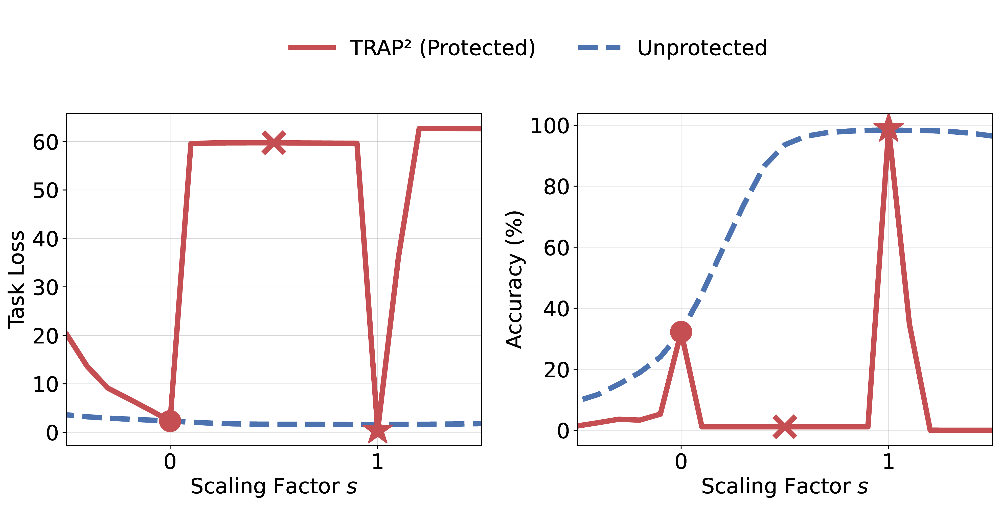

Making Models Unmergeable
via Scaling-Sensitive Loss Landscape
Abstract
The rise of model hubs has made it easier to access reusable model components, making model merging a practical tool for combining capabilities. Yet, this modularity also creates a governance gap: downstream users can recompose released weights into unauthorized mixtures that bypass safety alignment or licensing terms. Because existing defenses are largely post-hoc and architecture-specific, they provide inconsistent protection across diverse architectures and release formats in practice.
To close this gap, we propose Trap² (Training-time Protection via Task-Robust Adversarial Perturbation), an architecture-agnostic protection framework that encodes protection into updates during fine-tuning, regardless of whether they are released as adapters or full models. Instead of relying on architecture-dependent approaches, Trap² uses weight re-scaling as a simple proxy for the merging process. It keeps released weights effective in standalone use, but degrades them under re-scaling that often arises in merging, undermining unauthorized recomposition.
Key Idea: Shape the Loss Landscape Over Scale
Common merging operators — Task Arithmetic, TIES-Merging, DARE, and LoRA merging — can all be viewed through a unified lens: they aggregate released updates as W0 + Σi si · ΔWi, re-scaling each update by a coefficient si. Trap² exploits this by treating a single scaling factor s on the update as a lightweight proxy for merging.
Trap² solves an adversarial objective over update re-scaling: it preserves utility at the authorized scale (s = 1), while inducing degradation under off-nominal scaling (s ≠ 1) — precisely the regime that merging pipelines introduce. The result is an update that is sharp and effective standalone, yet brittle the moment it is re-weighted and blended with third-party updates.

Trap² retains high utility in the authorized scale (s = 1) but collapses under unauthorized scaling (s ≠ 1), unlike an unprotected adapter of comparable standalone accuracy.
Contributions
- Problem setup. We formalize a post-release protection setting for fine-tuned releases across architectures and release formats (adapter-only updates and full checkpoints), with a unified evaluation protocol that quantifies standalone utility and degradation under merging.
- Protection method. We introduce Trap², a training-time procedure that keeps a fine-tuned update effective at the nominal scale (s = 1) while making it brittle under off-nominal re-scaling (s ≠ 1), capturing the re-weighting effects of practical merging pipelines.
- Empirical & theoretical analysis. We evaluate Trap² across diverse merging operators, release formats, and architectures, and provide theory establishing (i) convergence under stochastic optimization and (ii) degradation under down-scaling and model merging.
Results
Across architectures (e.g., CLIP ViT-B/32) and release formats, Trap² preserves strong standalone utility while consistently degrading performance under widely used merging operators. It even holds up under stronger threat models that have access to task-relevant data — both data-dependent mergers and data-driven recovery attacks.
Averaged accuracy (%, lower is better for the attacker) under stronger threat models on CLIP ViT-B/32. Zero-shot reference: 42.48%.
| Protection | Data-dependent Merging | Data-driven Recovery | ||
|---|---|---|---|---|
| RegMean | CoM | ProDistill | SFT | |
| Unprotected | 49.11 | 64.78 | 73.82 | 56.86 |
| Trap² (Ours) | 9.48 | 32.33 | 49.15 | 45.50 |
After merging a Trap²-protected adapter, even white-box recovery (ProDistill, post-merge SFT) gains only a few points above the zero-shot reference, while the unprotected baseline recovers far more — indicating that protection meaningfully impedes recovery even with in-domain data.
Catastrophic degradation under averaging. Using a uniform-averaging proxy (scaling a single adapter by s = 1/N), Trap² shows consistent catastrophic degradation as soon as N ≥ 2 across eight vision benchmarks, while unprotected adapters stay relatively stable. Low cost. Despite the adversarial objective, Trap² is competitive with standard LoRA fine-tuning — faster to a shared target accuracy on 5 of 8 datasets and higher accuracy at a shared budget on 6 of 8.
BibTeX
@misc{jang2026makingmodelsunmergeablescalingsensitive,
title={Making Models Unmergeable via Scaling-Sensitive Loss Landscape},
author={Minwoo Jang and Hoyoung Kim and Jabin Koo and Jungseul Ok},
year={2026},
eprint={2601.21898},
archivePrefix={arXiv},
primaryClass={cs.AI},
url={https://arxiv.org/abs/2601.21898},
}